OKAYKABA? · DESIGN REVIEW · REVISION 2
One calm first-run flow.
Selected Option 1. Optional breathing, clear account/demo choice, a short setup, and honest saving feedback. These are static mockups for review.
Splash → optional breath → Welcome → Account/Demo → Name → Practice → Goal → Save → Ready → Open Today.
1. Opening and optional breathing
Start begins breathing; Pause freezes it; Skip opens Welcome. Back stops the cue.
Open full-resolution board
2. Welcome and demo choice
Resume or take the reduced-motion route. Choose Create account, Sign in, or an explicitly device-only demo.
Open full-resolution board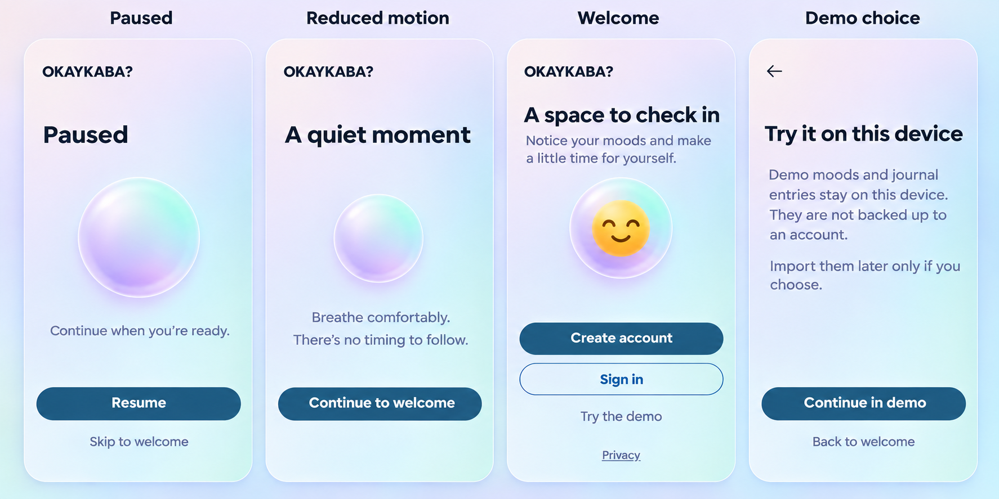
3. Account creation
Field validation, pending request, and uncertain failure. Leave before switching mode; do not duplicate account creation.
Open full-resolution board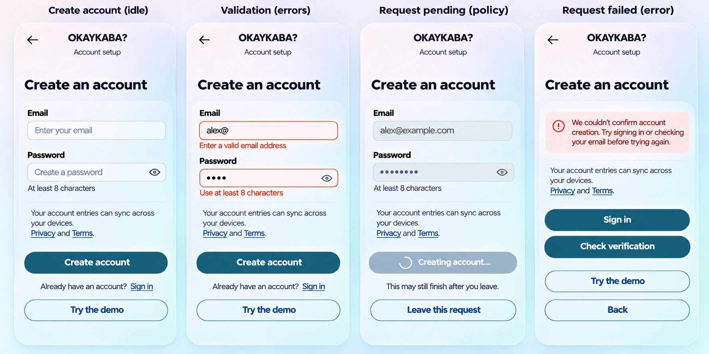
4. Verification checking
Awaiting → checking → still pending or failed. A tap alone cannot verify an account.
Open full-resolution board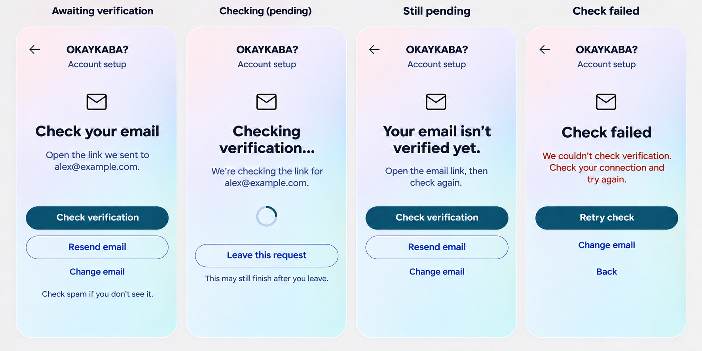
5. Change email and link outcomes
Update a securely authorized pending account; show new destination only after acceptance. Recover expired links; continue after actual verification.
Open full-resolution board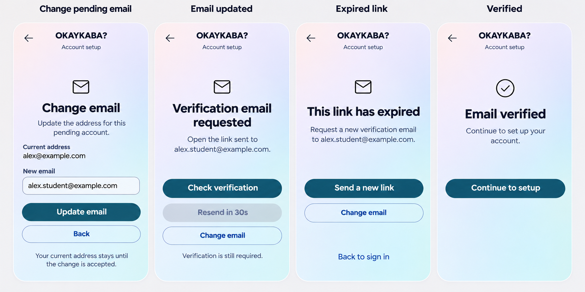
6. Sign-in
Idle, invalid credentials, pending, and verification-needed branches. Editing credentials is separate from changing an account address.
Open full-resolution board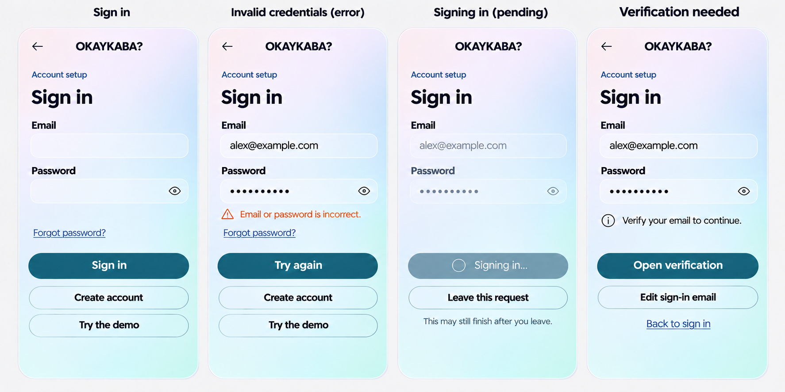
7. Password recovery
Validation, request acceptance, expiry, new password, and successful update. Shared pending policy applies.
Open full-resolution board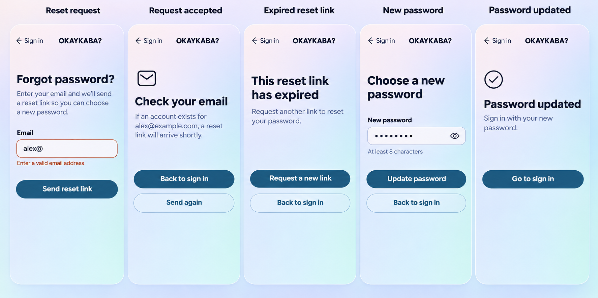
8. Optional preferred name
Blank Continue and Skip both use a neutral greeting. No empty-name error.
Open full-resolution board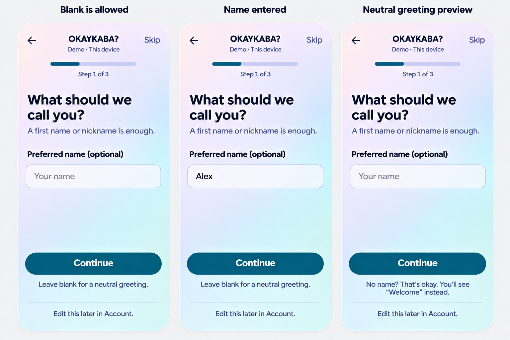
9. Unsaved practice
Select a mood or Skip. Practice never enters history. Back returns to Name.
Open full-resolution board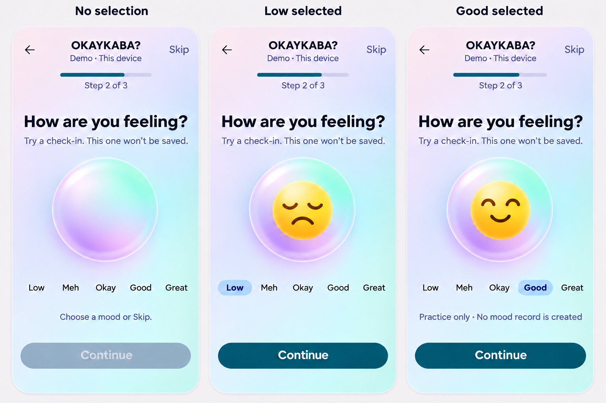
10. Optional goal and local save
Finish without a goal or Skip. Pending save exposes Leave this request, with no competing Back/Skip.
Open full-resolution board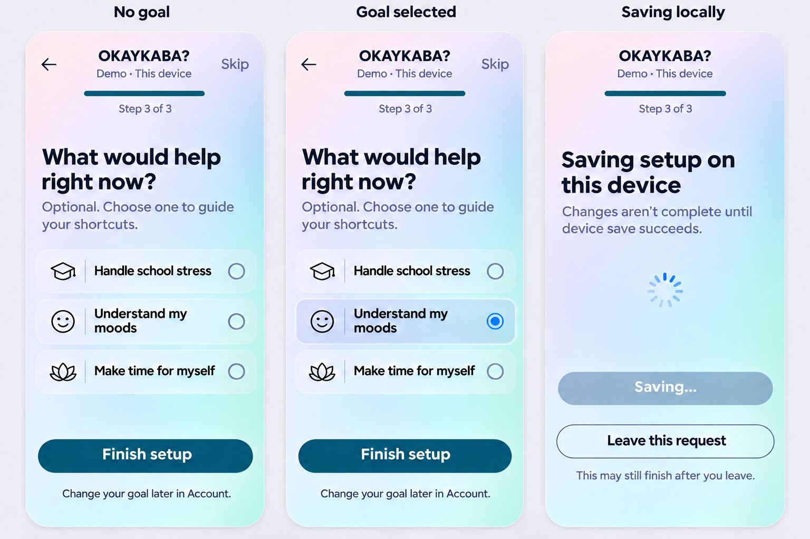
11. Completion and sync outcomes
Device failure, account pending/synced/failed, and demo ready are distinct. Open Today is available after successful device saving.
Open full-resolution board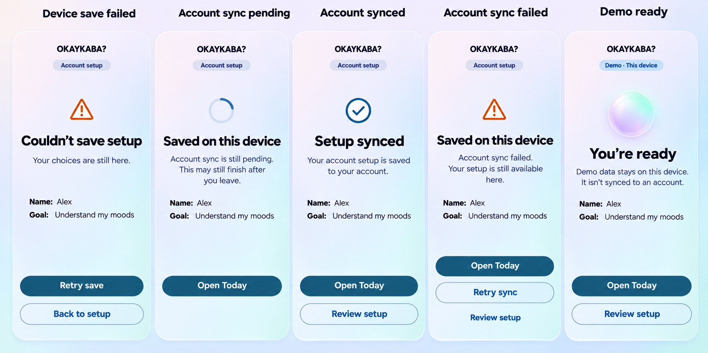
12. Keyboard and enlarged text
Continue above keyboard; scrollable enlarged text; wrapped mood choices. Runtime accessibility remains untested.
Open full-resolution board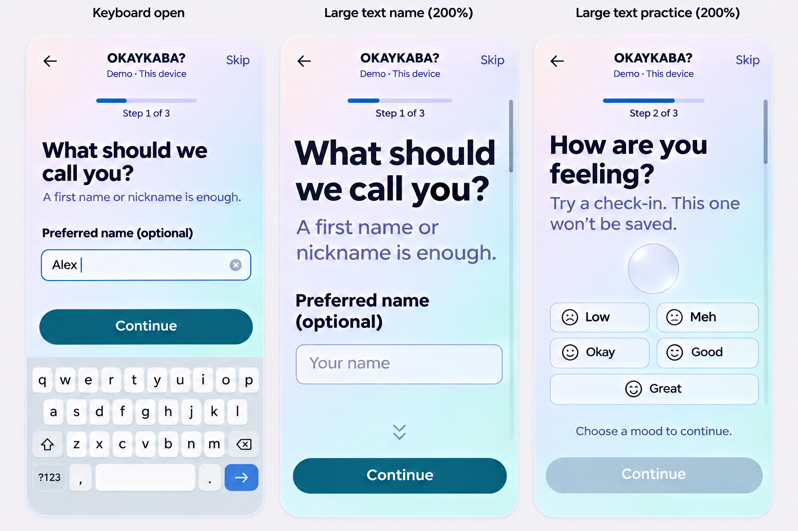
Review boundary
No app code changed. Authentication, cloud saving, animation, keyboard behavior, and accessibility require later prototype/device verification. Remaining Today, Journal, and Calendar designs await first-run approval.